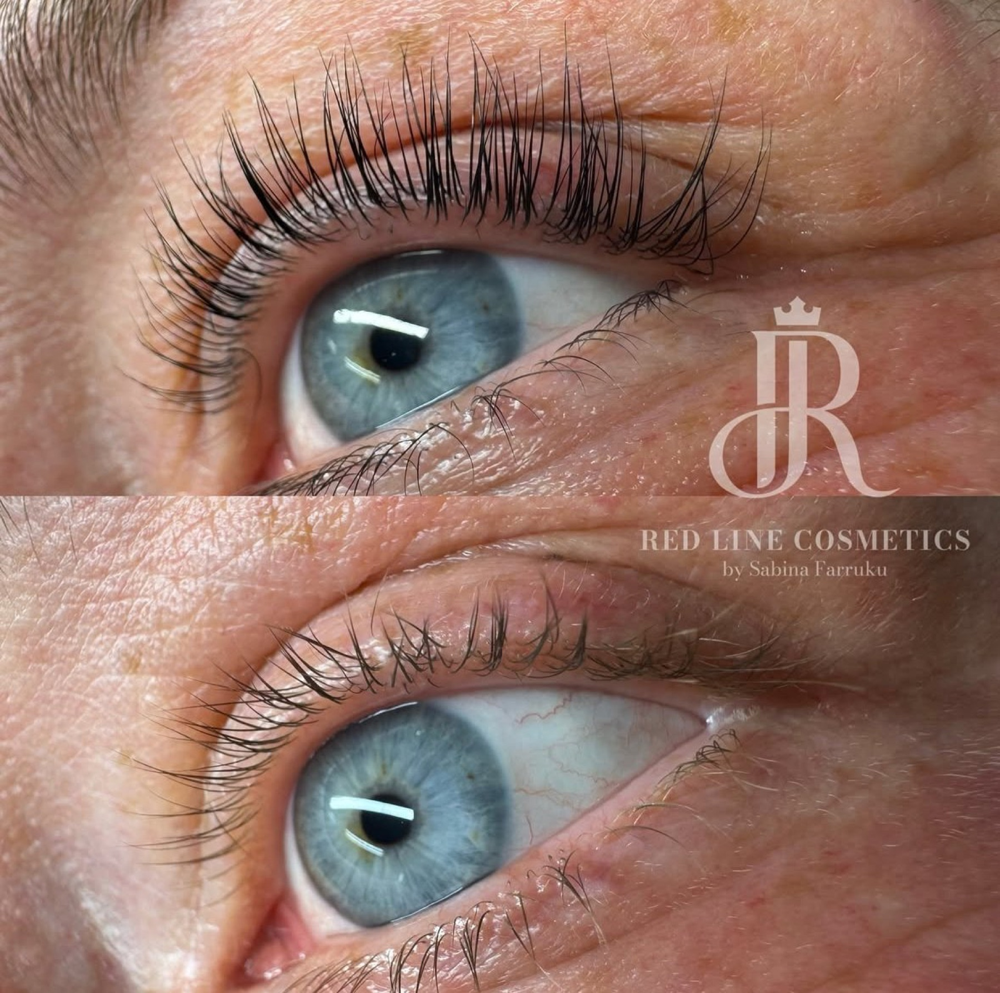

Kosmetikstudio München-Forstenried
Klare  Linien.Starker Auftritt.
Linien.Starker Auftritt.
Wimpern, Brauen, Permanent Make-up und Hautpflege bei Sabina Farruku in München-Forstenried.
Termin online buchen
Leistungen
Services im Überblick
01Microneedling
Regenerierende Behandlung für ein ebenmäßigeres Hautbild, individuell auf Ihre Haut abgestimmt. Gern auch als Teil Ihrer persönlichen Hautpflege-Routine.
02Wimpernlifting
Unser Lashlift verleiht Ihren Naturwimpern neuen Schwung und öffnet den Blick – ganz ohne Extensions oder Mascara.
03Browlifting / Brow Lamination
Ein sanftes Browstyling bringt Ihre Augenbrauen in Form und betont ihre natürliche Fülle – ein harmonischer Rahmen für Ihr Gesicht.
04Permanent Make-up / Microblading
Perfekt geformte Augenbrauen, ein ausdrucksstarker Lidstrich oder harmonisch konturierte Lippen – dauerhaft frisch, ganz ohne tägliches Schminken. Auch die schonende Korrektur oder Entfernung von altem Permanent Make-up ist möglich.
05Dauerhafte Haarentfernung (Laser)
Modernste Dioden-Lasertechnologie für eine schonende, präzise Haarentfernung. Ob Beine, Achseln, Bikinizone oder Gesicht – ideal für Frauen und Männer.
06Make-up / Visagistik
Make-up für besondere Anlässe und den Alltag, abgestimmt auf Ihre persönlichen Merkmale.
07Individuelle Gesichtsbehandlungen
Auf Ihren Hauttyp und Ihre Bedürfnisse abgestimmt: von intensiver Reinigung über Feuchtigkeit und Anti-Aging bis zu Fruchtsäurebehandlungen. Egal ob Frau oder Mann.
08Fineline Tattoo
Feine, filigrane Linien und zarte Motive, präzise gestochen. Sprechen Sie uns mit Ihrer Idee an.


Über Sabina Farruku
Schönheit ist individuell
„Wir bekämpfen keine Hautprobleme, wir bringen Ihre Haut zum Strahlen.“
Jeder Mensch ist einzigartig. In unserem Kosmetikstudio in München möchten wir Sie dabei unterstützen, Ihre persönlichen Merkmale zu betonen und Ihre natürliche Schönheit zum Vorschein zu bringen.
Wir verstehen Schönheit als eine ganz persönliche Reise – eine, die von innen nach außen geht. Wahre Schönheit liegt auch im Selbstbewusstsein, das mit dem Gefühl einhergeht, sich in der eigenen Haut wohlzufühlen.
Sabina Farruku, Gründerin
Ablauf
Ihr Termin in drei Schritten
Beratung
Wir besprechen Ihre Wünsche, Ihren Hauttyp und das passende Vorgehen, bevor wir beginnen.
Behandlung
In ruhiger Atmosphäre setzen wir die Behandlung sorgfältig um und nehmen uns die Zeit, die sie braucht.
Nachpflege
Sie erhalten Tipps zur Pflege danach, damit Ihr Ergebnis lange schön bleibt.
Ergebnisse
Vorher und nachher



Schulungen & Kurse
Sie möchten Wimpern, Brauen oder Make-up selbst von Grund auf lernen? Die Red Line Academy gibt Wissen und Praxis weiter. Termine und Inhalte besprechen wir persönlich.
Schulung anfragenFAQ
Häufige Fragen
Wie bereite ich mich auf den Termin vor?
Kommen Sie am besten ungeschminkt im Bereich der Behandlung. Bei Wimpern- und Brauenbehandlungen verzichten Sie bitte auf Mascara und Augen-Make-up. Offene Fragen klären wir gern vorab telefonisch.
Wie lange dauert eine Behandlung?
Das hängt von der Behandlung ab. Bei der Buchung sehen Sie die ungefähre Dauer. Beim Beratungsgespräch besprechen wir den genauen Zeitrahmen.
Was muss ich nach der Behandlung beachten?
Nach jeder Behandlung bekommen Sie individuelle Hinweise zur Pflege. Das gilt besonders nach Permanent Make-up, Laser und Microneedling.
Was gilt, wenn ich einen Termin absagen muss?
Bitte erscheinen Sie pünktlich. Bis 48 Stunden vor dem Termin ist die Absage kostenfrei. Danach sowie bei Verspätung von mehr als 30 Minuten oder Nichterscheinen kann eine Ausfallgebühr anfallen.
Kontakt & Anfahrt
Besuchen Sie uns
- Adresse
- Red Line Cosmetics
Fürstenrieder Str. 279
81377 München - Öffnungszeiten
- Montag – Samstag, 10:00 – 18:00 Uhr
- Telefon
- +49 172 9746892
- sabinafarruku@yahoo.de
- @red_line_cosmetics
Anfahrt
Die Karte öffnet sich in Google Maps. Erst mit Ihrem Klick werden Daten dorthin übertragen.
Route in Google Maps Termin online buchen